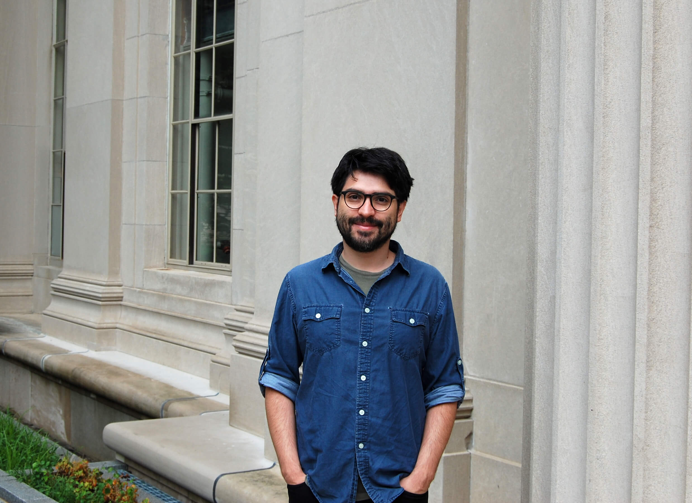

Hello and welcome! I am an Assistant Professor (UD-1 with tenure) in the Mathematics
of Computational Science group (MACS) within the Department of Applied Mathematics at the University of Twente, The Netherlands.
My research lies in the intersection of wave phenomena, scientific computing, integral equations, high-order PDE solvers, and numerical analysis. More detailed information about my research is available here or in my CV
Carlos Pérez Arancibia
 Assistant Professor, Department of Applied Mathematics,
University of Twente, The Netherlands
Assistant Professor, Department of Applied Mathematics,
University of Twente, The Netherlands